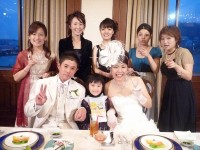
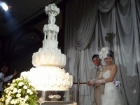

サンプリエール 坂口・野村 御両家 披露宴
ご新郎：坂口 善彦様
ご新婦： 香織様
披露宴日：2008年11月1日
担当者：寺平
会場を決めた理由はなんですか？
友人夫婦がサンプリエールにいたから。県外からのゲストもすぐにわかる場所で１フロア貸切になる会場がよかったから
よかった点はなんですか？
私達はとにかく『ゲストが楽しんでもらえるお祭り騒ぎな結婚式』を目指しました。したい事がたくさんあり、担当の方に相談すると「よかよか！せん ね～！」といつも一緒に盛り上がってくれました（笑）他にも食べ物アレルギー、車イス、小さい子供、妊婦さんなどのゲスト１人１人個別の対応をしてもらえ たので本当に助かりました。母が入院中で挙式にしか参列できず披露宴と挙式を別の日にしてもらったり挙式中に両親への手紙、花束贈呈をさせてもらったりと いろんなわがままに応えてもらいました。
披露宴をするにあたり不安だったことはありましたか？
母が披露宴も出席できるようになり、途中体調を崩す事も想定していましたが、横になりやすい和室の控室を準備してもらうなどたくさんの配慮をしても らいました。結果、無事に終わることができましたが、私たちの精神的バックアップにもなり安心して楽しむことができました。他にもどんな小さな事にもス ピーディーに対応してくれるのでお任せすることができました。
お二人にとって印象に残ってることは何でしたか？
ゲスト全員と３回にわけて記念撮影したこと！！（これも私たちのワガママで！！）
みんなからのサプライズ余興！！笑いがとまりませんでした。
挙式は親族のみでしたので、６名くらいしかいなかったのが・・・退場する際サンプリエールスタッフの方々が多数参加してくださってフラワーシャワー をしてくれたこと！！
サンプリエールおすすめのポイントをあげてください。
とにかく担当の方だけでなくスタッフみなさんが本当にあったかいです。ただフレンドリーなのではなく私達を大事な友人のように扱ってくれて小さな所 まで気を配ってもらえます。教育もきちんと行き届いていてどんな年代の方も満足すると思います。
何かご意見があればご記入ください。
最初は友人がいるからというきっかけでしたが、今はそれ以上にサンプリエールでよかったと心から思っています。これから結婚式をする方には声を 『大』にして言いたいです。『サンプリエールしかない！！（笑）』と・・・本当にありがとうございました。


{kind=link}
{kind=link}
{kind=link}
{kind=link}
{kind=link}
{kind=link}
{kind=link}
{kind=link}